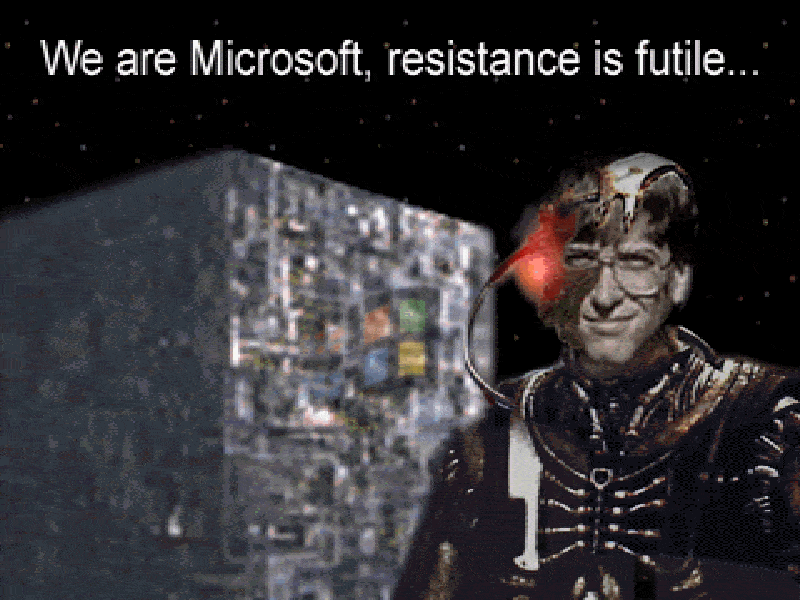
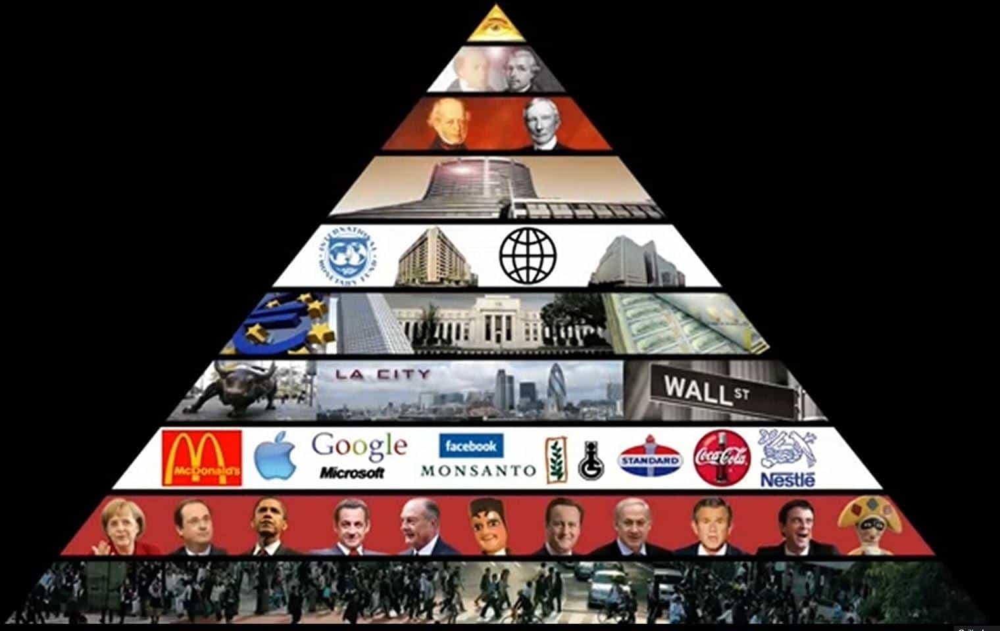

If you have several email accounts, you might suspect a bunch of corporations just sent their legalese munchkins to a writer’s workshop. What’s going on here?
Microsoft

Microsoft is the 800 pound gorilla of computer technology.
There are some new changes to the Microsoft user agreement. This affects users of Hotmail or their many other services (121 are listed). Could this have any implications for freedom of speech? The answer wasn’t hard to find.
Item 5 describes “offensive language”, specifying it “means violent, profane, or hateful language”. It states that this merely “clarifies that inappropriate content includes offensive language, among other things.” That’s remarkably open-ended. Presumably, tirades count. However, technically even a swear word is a violation. They’re not micromanaging that far yet, but they could.
The complete user agreement states the following under 2.a.vii:
Don’t engage in activity that is harmful to you, the Services, or others (e.g., transmitting viruses, stalking, posting terrorist content, communicating hate speech, or advocating violence against others).
This 15,000 word document clarifies the vague phrase “hate speech” no further. Legalese by some other companies actually does, though enforcement standards are selective.
Suppose you’re caught emailing politically incorrect jokes, or maybe the treatise on guerrilla warfare by St. Che (presumably that’s “terrorist content”). If you get locked out of your account, causing you to lose a major business deal, can you go to court? Item 11 under “Standard Application License Terms” says:
…[Y]ou can recover from the application publisher only direct damages up to the amount you paid for the application or $1.00, whichever is greater. You will not, and waive any right to, seek to recover any other damages, including lost profits and consequential, special, direct, indirect, or incidental damages, from the application publisher.
Was that email account free? Okay, so you can sue them for a buck. Or, maybe not. The “Binding Arbitration and Class Action Waiver” section states that you can’t go to court. Instead, some arbitrator decides.
Things might get more restrictive and intrusive yet. Behold the standard “we can do anything” clause:
We may change these Terms at any time, and we’ll tell you when we do. Using the Services after the changes become effective means you agree to the new terms.
Would you want to get a car loan if the finance company dictated where you could drive? What if they also permitted themselves to change the loan’s terms whenever they wanted, and continuing to drive it constituted your acquiescence? You could find another company, but that’s difficult if every major bankster specifies the same conditions.
Oath
At least they didn’t call it “The Cabal”.
Verizon teamed up with Yahoo and AOL to form a new company called Oath. That curious name sounds rather imposing. A USA Today article states:
Armstrong on Tuesday stressed that the brands will stay the same. We are going to be “all in in terms building awesome products and services among the biggest brands we have,” Armstrong told CNBC.
According to this upbeat article:
Armstrong has described Oath as a B2B brand, overseeing the names that you are all familiar with. Beyond Yahoo and AOL, those names include Tumblr, Huffington Post, TechCrunch and Engadget. In all, about 1.3 billion consumers use the company’s collection of brands making these among the most powerful digital brands on the Internet.
So about a sixth of the world’s population is “under Oath”.
A MediaPost item describes that they’ve allowed themselves to scan your email. If you don’t like it, tough luck:
Google stopped scanning Gmail messages last year. It has faced class-action lawsuits and criticism over the practice.
CNET reports that Oath has extended its arbitration clause and class-action waiver to Yahoo Mail, and that this will make it harder for consumers to sue.
Oath’s revised policy covers “analyzing content and information when you use our services (including emails, instant messages, posts, photos, attachments, and other communications), linking your activity on other sites and apps with information we have about you, and providing anonymized and/or aggregated reports to other parties regarding user trends,” according to media reports.
But wait! There’s more!
Gizmodo reports that Oath “even notes that it can collect Exchangeable Image File Format (EXIF) data from images uploaded by the user—information that can be used to identify everything from the date and time a photo was taken to the geolocation associated with an image.”
It’s splendid how corporations keep wriggling deeper into our personal lives. Again, it may get even worse yet; items 12.b-c comprise their “we can do anything” clause.
Further, presumably if they can snoop in your email for targeted advertising, they also can search robotically for politically incorrect content you might be sending to your friends. Are there rules against that? Of course! Item 2.d.ii of their Terms of Service says you can’t:
…make available any content that is harmful to children, threatening, abusive, harassing, tortious, defamatory, vulgar, obscene, libelous, invasive of another’s privacy, hateful, or racially, ethnically, or otherwise objectionable
“Otherwise objectionable” couldn’t possibly be any more vague. Their guidelines page does clarify further, though:
Don’t use hate speech. Hate speech directly attacks a person or group on the basis of race, ethnicity, national origin, religion, disability, disease, age, sexual orientation, gender, or gender identity. As noted above, we’re a diverse global community of many types of people, with different beliefs, opinions, sensitivities, and comfort levels. Please be respectful and keep hateful and incendiary comments off of Oath. Read these tips for confronting hate speech from the Anti-Defamation League.
This goes beyond ordinary PC standards. Freely debating religion, morality, or immigration policy becomes effectively impossible. Even calling spergs socially maladjusted is “hate speech” too. So is putting down baby boomers. The list goes on.

Promoting censorship damages their reputation more than images like this.
Further, they endorse the ADL’s standards, but that alphabet soup outfit certainly has an agenda. They’ve been pushing online censorship since the 1990s when cyberspace was new. However, the Internet was never designed to be a big hug-box.
What’s “hate speech” anyway?

When leftists express strong opinions, that’s free speech. Big difference!
Note well, “hate speech” isn’t a legal term, or even a precise concept (it’s less definable than “heresy”). Rather, it’s a new framing tactic to delegitimize politically incorrect viewpoints. This deliberately restricts debate. Controlled opposition opinions are tolerated, but standards change.
In practice, the mildest criticism of multiculturalism becomes “hate speech”. So does thoroughly researched discussion about biological group differences. Politically correct censorship always applies standards unevenly. People can argue incessantly for militant Islam, open borders, radical feminism, gender bending, having sex with anything that moves, or exterminating Western civilization. However, arguing against these might get accounts shut down.
That’s the problem with vague phrases like “hate speech”. (Censorship advocates consider this a feature, not a problem.) Cubicle munchkins you’ll never meet determine what you’re allowed to say. For example, your caustic remarks about Canadian chicks might be deemed “hateful” by a blue-haired feminist with a nose ring, working for some effete Silicon Valley technocrat.
Summary

Would you trust big business to safeguard your privacy and freedom of expression?
Huge corporations that can rewrite the rules any time are effectively omnipotent. They’ve drastically limited any recourse by their customers. They even get to decide what you’re allowed to say in private email. Actually, these changes—dressed up with perky public relations—are nothing companies haven’t already been doing. Still, the simultaneous timing seems rather odd.
Governments sometimes behave this way too; that’s considered despotic. Is it okay when corporations do that?
Read More: How John Stuart Mill Demolished Roosh’s Feminist Opponents Over 150 Years Ago